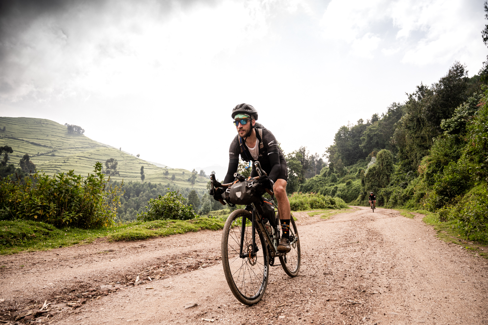
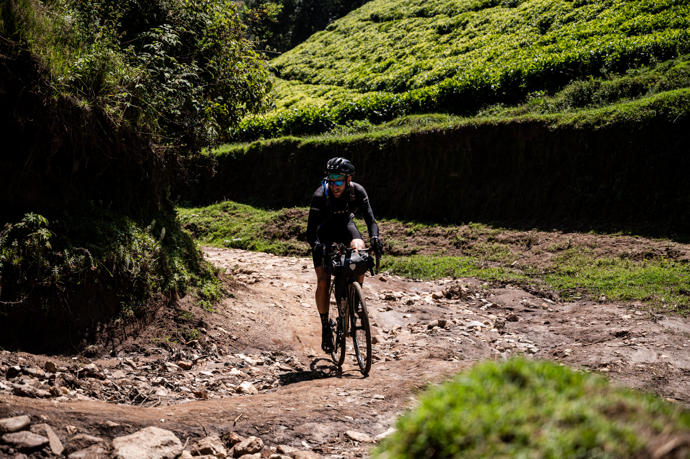
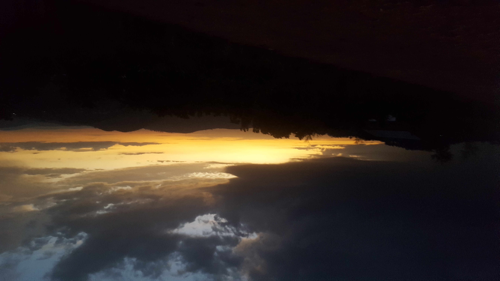

Race Around Rwanda 2021
It's by having our winter riding tour in the nordic countries cut short by the covid, that we decided with Eleonora to register at the Race Around Rwanda (RaR). Changing the Nordic countries by Rwanda, is quiet a big stretch in the preparation and the mindset. Going in a hot country, with 12h of sun every day is a good break in the endless European winter. As you know it was still a Covid time all around the world. Travelling around the world is already stressfull. You need a PCR test before flying off and after landing in the country. You need to stay in quarantine waiting for the results. There is a lockdown in Kigali (the capital) and a curfew from 4am to 6pm for the rest of the country. After 14h of transit and a lot incertitude, we were allowed to enjoy the 35°c and the amazing tropical fruits that goes with it.
The hollidays can start at 30km north of Kigali in Rusiga at an elevation of 2200m above the sea level. This few days before the start of the adventure gave me the chance to addapt to the heat and altitude. That's what I thougt. For the first ride the altitude bring my heart rate really high and the heat killed me at the same time. People on those classic heavy steel singlespeed bikes, with 27.5" wheels, riding with sandals, fully loaded (vegetables, animals, car parts, you chose it) were way much faster than me. During these 4 days I could ride some awesome singletracks, big gravel trail and some amazing asphalt road.

Came the day of the briefing, to explain us all the special rules. Specials rules, because two weeks before the start, racing was forbiden in the country because of the health issues (covid). So the race organisators decided to change the format of the race to a journey. Instead of riding 1000km unsupported in one time. We had to ride 6 "stages" from 110km to 200km between 4am and 6pm. And all sleep at the same hotel every night.
The first day was 184km long, with a long part of asphalt (105km) to get out of Kigali direction the East of the country and bring us to the 1st gravel section. This section was 79km long in the Akagera park. The gravel was smooth and easy at the beginning and became really fast a nice singletrack in the middle of the Savane. I had then the chance to ride with some riders of the Rwandan National Team and to discover them. After this nice singletrack, and with 30km to go, a rain storm decided to show up. We had to wait, for 45min in a small shop on top of hill, that the raindrops (big as ice cube) stopped. After the rain it was a chill end of a ride to the hotel next to the lake Muhazi.

The second day was longer, 200km for 3000m of d+. The start of the ride was an easy and flat gravel ride of 50km along the lake Muhazi. Then it was a long and really hot day of rolling hills on the road to the city of Base. After this town, the second gravel section of the day could start. An interesting and feared 53km for 1100m of d+ of gravel. This gravel was really hard because at the end of the ride with really stip moment (around 20%). Feeling good on the last stip uphill of the day, just between the twin lakes, I decided to leave the group and push the pace until the end of the day. Those last 35km gave me the chance to test me. I will regret it the day after. The finish of the day was at the Cycling Center of Rwanda. This place was amazing and I really recomand you to spend some time there if you've got the chance.

The third day was also 200km but this time with 4000m of d+. We start with a short gravel section on a "volcano edge", it was more about a nice gravel with a view on the two highest volcanoes of the country. After this gravel it was a long straight line on the asphalt to bring us at the bottom of the "giant" of this edition. It was a long gravel road with very steep part to bring us to 2870m of elevation going from the tea plantation to a pinetree forest by astonishing alpestre views. The downhill of this mountain lead us to Gisenyi and his border with the Cong next to the lake Kivu. We had a "gravel" section in this town, which was more a cobble sector Paris-Roubaix style, expect this time the cobblestone were dark and made of volcano stone. After this we still had to go through gravel, and this one is the Congo Nile debut, with this hard 30% wall and more than 35°c in a burning midday sun. After all of this, the day wasn't over, a few rolling were in the way to Kibuye and the hotel for the night.

The fourth day was 107km long for 2600m of d+. This day was all about one gravel section. A really nice 44km of gravel to bring us in huge tea plantation, the Gisovu Tea plantation. The uphill was long with some easy technical section, just about picking a good line, not too steep, zero steps,... Which was the most technical yet. The tea plantation really looks like a big garden in the middle of the mountain (around 2500m of elevation). The downhill was easy and fast. The start of it was in the Nyungwe forest, a tropical forest. We were able to see a lot of monkeys in the forest. The second part was a large gravel road were I cut my rear tyre. After fixing it, I was able to reach the hotel for the night, at the top of a 4km climb of 10% slope.
The fifth day was 136km long for 2784m of d+. The main part of the day was the first 55km in the Nyungwe forest, the same tropical forest as the day before. It was an amazing scenery, birds singing, no villages, monkeys crossing the road, enormous worms on the road. I was expecting to see King Kong getting out of the forest at any moment. The place is really wonderfull. During 55km there is no food, water, shop of any kind, villages or humans (expect for the military controlling the border with Burundy). Just broken trucks on the side of the road. After this forest, it was the first and only time we stop in a restaurant with Adrien to eat something. And the buffet in this restaurant was quit good and very welcome. We finish the day with 48km of gravel on King's Road. The beginning of this section was really rocky and shaky. This King's Road bring us straight in Nyanza for our last night on the road.
The sixth and last day was 156km long for 1900m od d+. We start the day with the last section of gravel, a 80km long gravel road. We start early with Adrien to arrive for lunch at the finish line. After 45min of riding on the gravel a tropical rain show up and shower us for 1h. Just after the rain we get out of the gravel for the last stretch of asphalt direction Kigali. We teamed up we three other rider for the end to finish strong the journey and ride the last 90km in 2h30. We had a last surprise in the streets of Kigali, a last uphill cobblestone sector before the finish line. The beers at the Onomo hotel were more than welcome.
